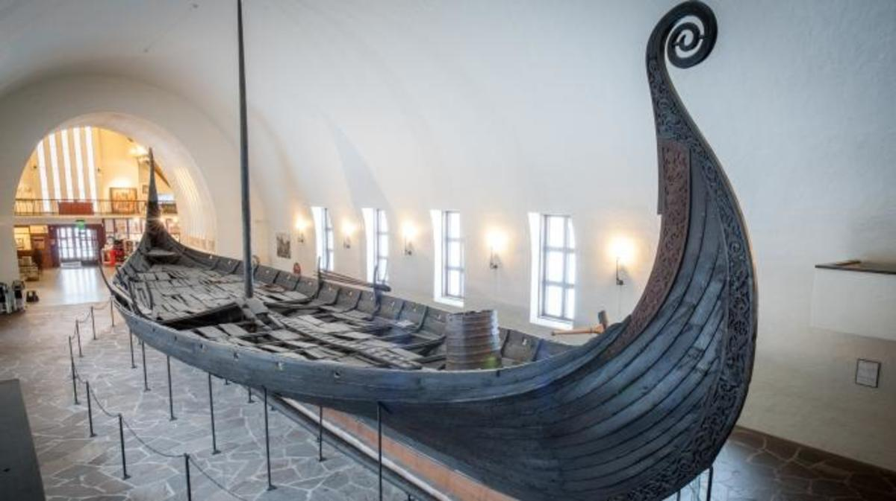

-
The danish viking era started in the late 8th century.
800 A.C
-
The battle of hingston down was fought
838 A.C
-
865 A.C
-
Viking forces from the great heathen forces conquerers York
866 A.C
 -
Within the 870s the Vikings had conquered most of north-east England
870 A.C
-
The battle of Edington was fought
878 A.C
-
The battle of Brunanburh was fought
937 A.C
-
The battle of Holme was fought
937 A.C